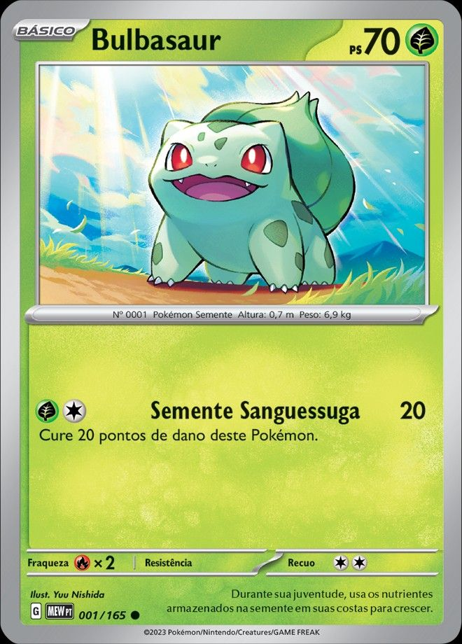
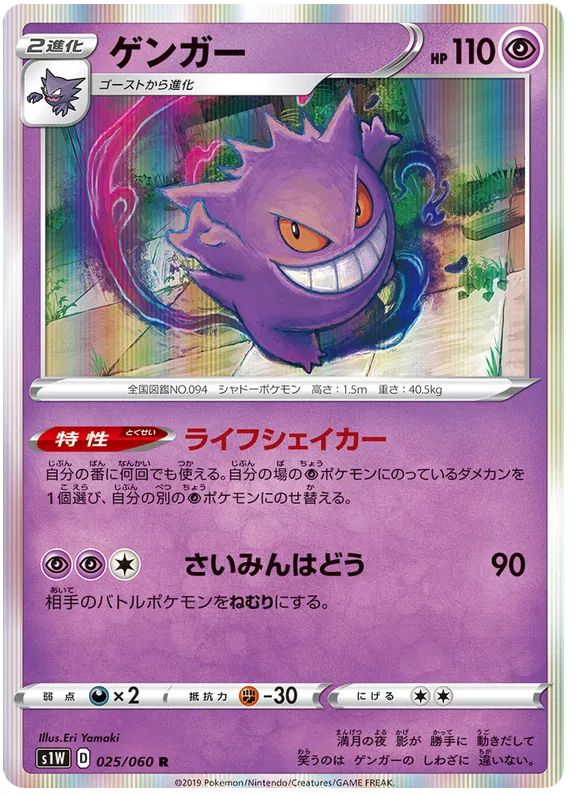

Bulbasaur is a small, quadrupedal Pokémon with blue-green skin and darker blue-green spots.
A green plant bulb grows on its back, which stores energy and grows as it evolves. It has red eyes,
pointed, ear-like structures on top of its head, and short, stubby legs with three claws each.

Gengar is the final evolution of Gastly, evolving from Haunter when traded. It is known
as the Shadow Pokémon and first appeared in Generation I of the Pokémon series
(Red/Blue). Gengar is recognized for its round, purple body, spiky back, sinister grin,
and red eyes, which give it a ghostly and eerie appearance.